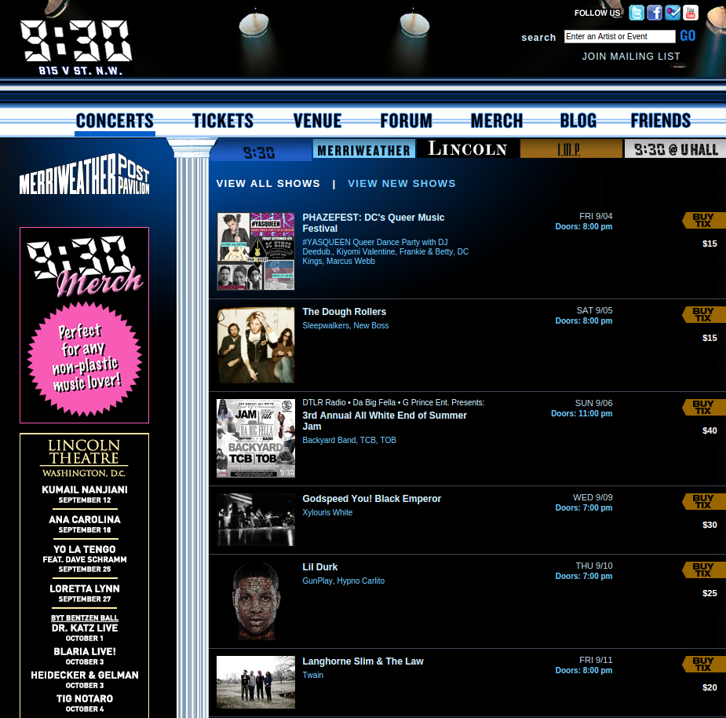
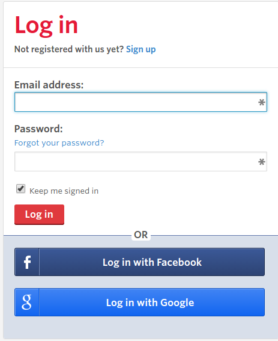
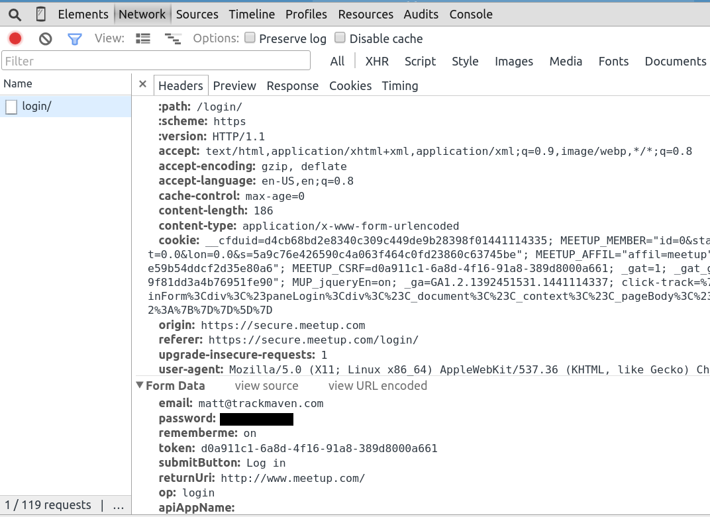
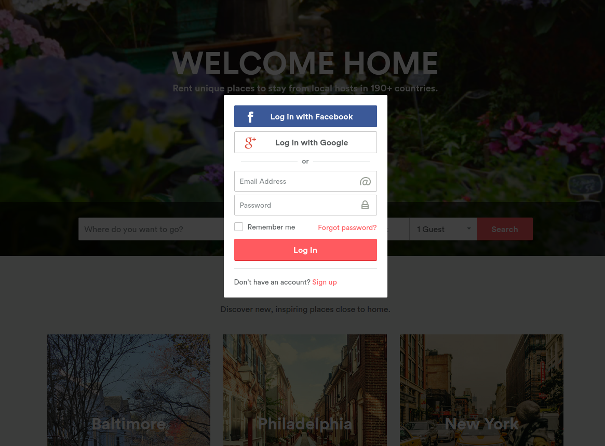
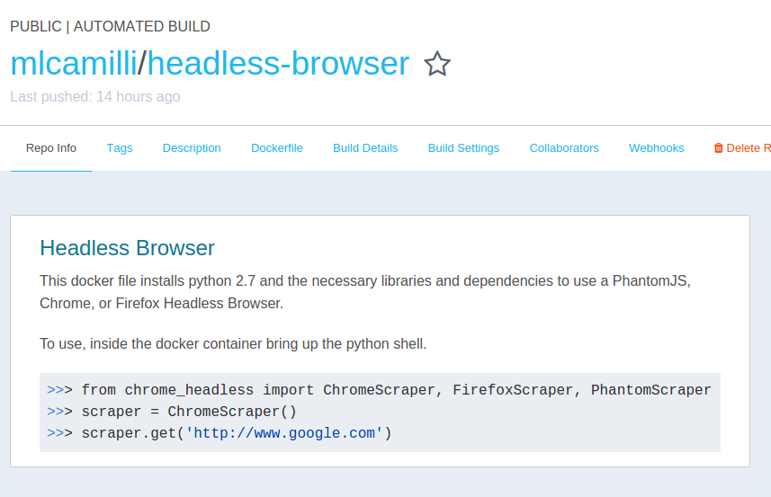

class: center, middle, inverse # Guide to Python Webscraping ## By Matt Camilli --- class: center, middle, inverse # Don't be a jerk </img> --- name: tools .left-column[ ## Scraping Tools ### - Chrome Developer Tools ] .right-column[ The Chrome Developer tools are a set of web authoring and debugging tools built into the Chrome Browser. For scraping purposes they are ideal for figuring out html structure and following all network traffic on a page. <img style="width:90%;padding-top:10px;" src="https://developer.chrome.com/devtools/images/devtools-window.png"></img> ] --- .left-column[ ## Scraping Tools ### - Chrome Developer Tools ### - Requests ] .right-column[ Requests is an HTTP library written in Python, for human beings. ```python >>> r = requests.get('https://api.github.com/user', auth=('user', 'pass')) >>> r.status_code 200 >>> r.headers['content-type'] 'application/json; charset=utf8' >>> r.encoding 'utf-8' >>> r.text u'{"type":"User"...' >>> r.json() {u'private_gists': 419, u'total_private_repos': 77, ...} ``` ] --- .left-column[ ## Scraping Tools ### - Chrome Developer Tools ### - Requests ### - Beautiful Soup ] .right-column[ Beautiful Soup is a Python library for parsing data out of HTML and XML. ```python soup.title # <title>The Dormouse's story</title> soup.title.name # u'title' soup.title.string # u'The Dormouse's story' soup.title.parent.name # u'head' soup.p # <p class="title"><b>The Dormouse's story</b></p> soup.p['class'] # u'title' soup.a # <a class="sister" href="http://example.com/elsie" id="link1">Elsie</a> soup.find_all('a') # [<a class="sister" href="http://example.com/elsie" id="link1">Elsie</a>, # <a class="sister" href="http://example.com/lacie" id="link2">Lacie</a>, # <a class="sister" href="http://example.com/tillie" id="link3">Tillie</a>] soup.find(id="link3") # <a class="sister" href="http://example.com/tillie" id="link3">Tillie</a> ``` ] --- .left-column[ ## Scraping Tools ### - Chrome Developer Tools ### - Requests ### - Beautiful Soup ### - Selenium ] .right-column[ Selenium's Webdriver is a tool that provides an API to drive a browser natively as a user would. ```python from selenium import webdriver from selenium.webdriver.common.keys import Keys browser = webdriver.Firefox() browser.get('http://www.yahoo.com') assert 'Yahoo' in browser.title elem = browser.find_element_by_name('p') # Find the search box elem.send_keys('seleniumhq' + Keys.RETURN) browser.quit() ``` ] --- .left-column[ ## Scraping Tools ### - Chrome Developer Tools ### - Requests ### - Beautiful Soup ### - Selenium ### - Redis ] .right-column[ Redis is an open source advanced key-value cache and store. ```python >>> import redis >>> r = redis.StrictRedis(host='localhost', port=6379, db=0) >>> r.set('foo', 'bar') True >>> r.get('foo') 'bar' ``` ] --- class: center, inverse, middle # Simple Scrape ## 930.com --- ## http://www.930.com/concerts/ </img> --- # View Source/Inspect Element ```html <div class="list-view-item tfly-event-id-867329 tfly-org-id-4 tfly-venue-id-2"> <a href="/event/867329-ms-mr-washington/"><img src="//cdn.ticketfly.com/i/00/01/56/54/31-esm.png" width="100" height="100" alt="MS MR" title="MS MR" /></a> <div class="list-view-details vevent"> <h2 class="topline-info">How Does It Feel Tour</h2> <h1 class="headliners summary"><a href="/event/867329-ms-mr-washington/">MS MR</a></h1> <h2 class="supports description"><a href="/event/867329-ms-mr-washington/">Circa Waves, Crater</a></h2> <h2 class="dates">Thu 10/01</h2> <h2 class="times"> <span class="doors">Doors: 7:00 pm</span></h2> <abbr class="location" style="display:none;">9:30 Club</abbr><h2 class="city-state">Washington, DC</h2><h2 class="more-info"><a class="url" href="/event/867329-ms-mr-washington/">More Info</a></h2> <h2 class="additional-event-info"><p>$1 of every ticket will be going to the Third Wave Fund</p></h2> </div> <div class="ticket-price"> <h3 class="ticket-link primary-link"><a class="tickets" href="https://www.ticketfly.com/purchase/event/867329" onclick="return tfly_openWindowGA(this);" target="_blank">Tickets</a></h3> <h3 class="price-range">$30</h3> </div> </div> ``` --- # Scrape and Soup it ```python import requests from bs4 import BeautifulSoup from dateutil.parser import parse page = requests.get('http://www.930.com/concerts') soup = BeautifulSoup(page.content) concerts = soup.find_all('div', attrs={'class': 'list-view-item'}) data = [] for concert in concerts: item = {} try: item['artist'] = concert.h1.text.split(':')[0].replace( '(NEW DATE)', '').strip() date_str = concert.find('h2', attrs={'class': 'dates'}).text time_str = concert.find( 'h2', attrs={'class': 'times'}).text.replace( 'Doors:', '').strip() item['time'] = parse('{} {}'.format(date_str, time_str)) item['link'] = concert.h3.a.attrs['href'] item['sold_out'] = concert.h3.a.text != 'Tickets' data.append(item) except: continue ``` --- class: center, middle # [Live Demo] --- class: center, inverse, middle # Simple Auth ## Meetup.com --- # https://secure.meetup.com/login/ </img> --- # Login and Record </img> --- ```html <form action="https://secure.meetup.com/login/" method="post" id="loginForm" class="loginForm"> <div class="margin-bottom element"> <div class="label"> <label class="bold">Email address:</label> </div> <div class="input"> <input class="biginput span-100" type="text" id="email" name="email" autofocus="true" value="" tabindex="101" /> </div> </div> <div class="element"> <div class="label"> <label class="bold">Password:</label> <p class="small" style="margin-bottom: 4px;"> <a href="http://www.meetup.com/account/forgot/">Forgot your password?</a> </p> </div> <div class="input"> <input type="password" id="password" name="password" tabindex="102" class="biginput span-100" /> </div> <div class="input"> <label class="small" for="rememberme"> <input type="checkbox" id="rememberme" name="rememberme" tabindex="103" checked="checked" />Keep me signed in </label> </div> </div> <input type="hidden" name="token" value="68a97714-347e-4ae1-8cdf-cc936641a49c" /> <div class="margin-top"> <input type="submit" name="submitButton" value="Log in" class="button primary " tabindex="104" /> </div> <input type="hidden" name="returnUri" value="http://www.meetup.com/" /> <input type="hidden" name="op" value="login"/> <input type="hidden" name="apiAppName" value="" /> </form> ``` --- # Authenticate and store cookies ```python username = 'matt@trackmaven.com' password = os.environ.get('MEETUP_PW') login_url = 'https://secure.meetup.com/login/' session = requests.Session() response = session.get(login_url) soup = BeautifulSoup(response.content, "html5lib") login_form = soup.find(id='loginForm') token = login_form.find('input', attrs={'name': 'token'}).attrs['value'] form_data = { 'email': username, 'password': password, 'token': token, 'op': 'login', 'submitButton': 'Log in' } login_response = session.post(login_url, data=form_data) assert login_response.url == 'http://www.meetup.com/' redis = get_redis() redis.set('meetup', json.dumps(session.cookies.get_dict())) ``` --- # Load cookies and visit ```python session = requests.Session() redis = get_redis() cookies = json.loads(redis.get('meetup')) session.cookies.update(cookies) response = session.get('http://www.meetup.com') soup = BeautifulSoup(response.content, "html5lib") login_link = soup.find('a', attrs={'href': "https://secure.meetup.com/login/"}) assert login_link is None ``` --- class: center, middle # [Live Demo] --- class: center, inverse, middle # Advanced Auth ## Airbnb.com --- # Javascript, the Anti-Requests <img style="width:95%;" src="img/airbnb1.png"></img> --- # Modals, another pain </img> --- # Solution? Go headless </img> --- # Scraper Object ```python class Scraper(object): def __init__(self, proxy=None): self.service_args = [] self.proxy = None if proxy: self.proxy = proxy self.service_args.append('--proxy={}'.format(proxy)) # Can be http or socks5 self.service_args.append('--proxy-type=http') self.desired = dict(DesiredCapabilities.PHANTOMJS) self.desired["phantomjs.page.settings.userAgent"] = ( "Mozilla/5.0 (X11; Linux x86_64) AppleWebKit/53 " "(KHTML, like Gecko) Chrome/15.0.87" ) self.initialize() def initialize(self): self.browser = webdriver.PhantomJS(desired_capabilities=self.desired, service_args=self.service_args) def quit(self): self.browser.quit() ``` --- # FirefoxScraper ```python class FirefoxScraper(Scraper): def initialize(self): self.display = Display(visible=0, size=(1920, 1080)) self.display.start() self.browser = webdriver.Firefox(capabilities=self.desired, proxy=self.proxy) def quit(self): self.browser.quit() self.display.stop() ``` --- # Go to the page, click Log In ```python from headless_browser import FirefoxScraper scraper = FirefoxScraper() scraper.get('http://www.airbnb.com/') scraper.browser.implicitly_wait(10) login_button = scraper.browser.find_element_by_link_text('Log In') login_button.click() ``` --- class: center, middle # [Live Demo] --- # Log In ```python email = 'matt@trackmaven.com' pw = os.environ.get('AIRBNB_PW') scraper = FirefoxScraper() scraper.get('http://www.airbnb.com/') scraper.browser.implicitly_wait(10) login_button = scraper.browser.find_element_by_link_text('Log In') login_button.click() scraper.by_id('signin_email').send_keys(email) scraper.by_id('signin_password').send_keys(pw) scraper.by_id('user-login-btn').submit() redis = get_redis() redis.set('airbnb', json.dumps(scraper.browser.get_cookies())) ``` --- class: center, middle # [Live Demo] --- # Revisiting the site ```python scraper = FirefoxScraper() redis = get_redis() cookies = json.loads(redis.get('airbnb')) scraper.get('http://www.airbnb.com/') scraper.browser.delete_all_cookies() for cookie in cookies: scraper.browser.add_cookie(cookie) scraper.browser.refresh() ``` --- class: center, middle # [Live Demo] --- class: inverse # Thanks for attending! ## Follow me [@mlcamilli](http://twitter.com/mlcamilli) ## Github - [mlcamilli](http://github.com/mlcamilli) ## Blog(lol) - [mattcamilli.com](http://mattcamilli.com) ## Headless Browser - [https://hub.docker.com/r/mlcamilli/headless-browser/](https://hub.docker.com/r/mlcamilli/headless-browser/)